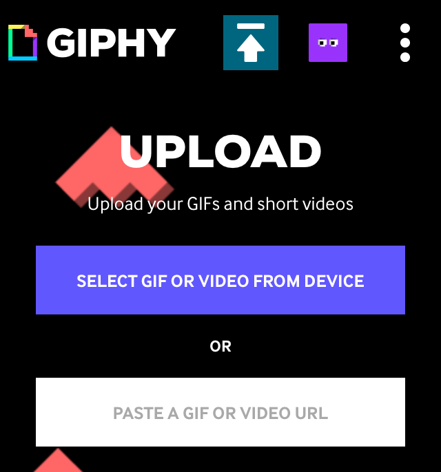
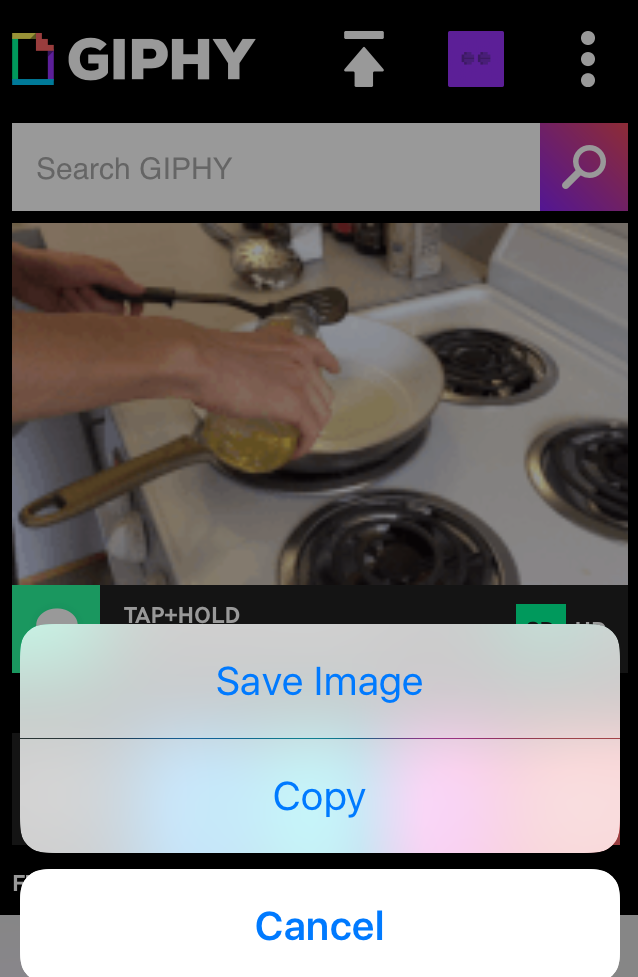
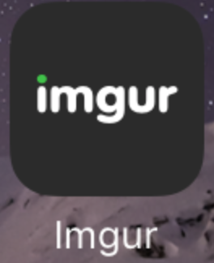
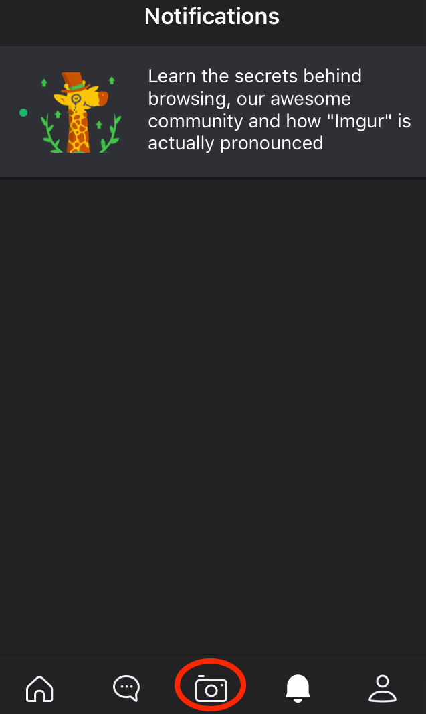
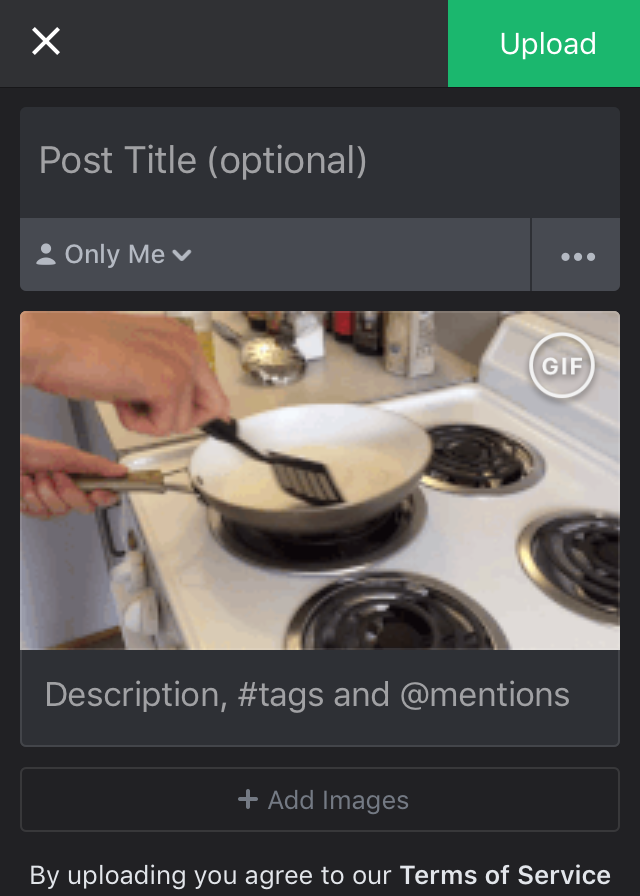
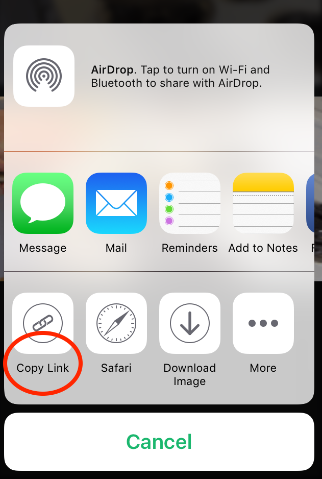
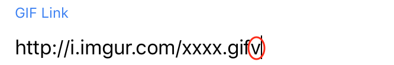

On computer, we can easily upload the video to giphy and get the GIF Link.
On your phone, things could be more complicated and this page means to help you through.
First, we want to convert the video in your phone library by uploading to giphy. Go to the Giphy website and upload the video from your device.
Next, tap and hold to save the GIF to your phone library.
Then, we upload the GIF from your library using Imgur App. (Make sure to download the APP instead of using their website)
  After uploading successfully. Click the GIF and click Copy Link.
Make sure to delete the "v" in "gifv" so that it links directly to the GIF.
After putting in the links to all the GIFs, they will show up in your recipe!